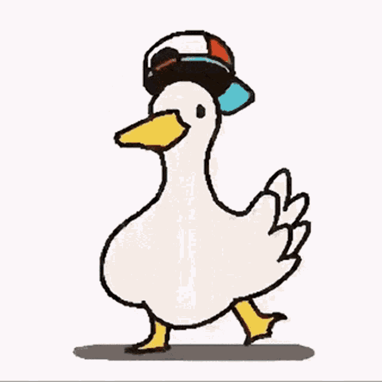

Feel free to view MyAnimeList
Contents
ma waifus
Click on image to change picture
videos

😍 😎 😏
Website: Crunchyroll voting website (might be unavailable after Jan 25 2022)
Anime of the year: Aot Final Season Part 1
Best boy: Ken 'Draken' Ryuguji Tokoyo Revengers
Best girl: Vladilena Milize 87 EIGHTY-SIX
Best protagonist: Odokawa ODDTAXI
Best antagonist: Eren Jaeger
Best fight scene: Yuji & todo vs hanami Jujutsu Kaisen (Cour 2)
Best director: AOT Final Season Part 1
Best animation: Mushoku Tensei (Cour 1)
Best character design: Tadashi Hiramatsu Jujutsu kaisen (cour 2)
Best score: PUNPEE, VaVa, and OMSB ODDTAXI
Best va performance(jp): Natsuki Hanase Odokawa ODDTAXI
Best va performance(en): Brittany Cox Fena Fena: Pirate Princess
Best opening sequence: Boku no sensou Aot Final Season Part 1
Best ending sequence: Shogeki Aot Final Season Part 1
Best action: Aot Final Season Part 1
Best comedy: Miss Kobayashi's Dragon Maid S
Best drama: 86 EIGHT-SIX
Best romance: Horimiya
Best fantasy: Mushoku Tensei (Cour 1)
Best film: Demon Slayer Movie: Mugen Train